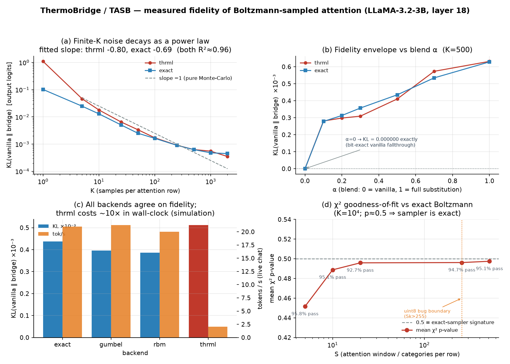

Abstract
Scaled dot-product attention is algebraically identical to a Boltzmann
distribution: the score q·k₃ is an energy and the 1/√d
scale is an inverse temperature. That identity is known and is not claimed here. What
this work contributes is an engineered, verified bridge that exploits it: a frozen
LLaMA-3.2-3B runs with the softmax at a chosen layer replaced by physical-style Boltzmann sampling
(THRML block-Gibbs over a categorical EBM), with zero gradient updates, and with the
resulting fidelity loss measured rather than asserted.
We show, with committed receipts, that (i) the sampler draws from the exact target — χ² goodness-of-fit against the analytically enumerated Boltzmann distribution yields mean p = 0.45–0.50 across S = 5…512 (p≈0.5 is the signature of a correct sampler), on both sides of a category boundary where a silent truncation bug previously corrupted results; (ii) the bridge is an unbiased estimator of vanilla attention — at blend α=0 it is bit-exact vanilla (measured KL = 0.000000); (iii) residual error is finite-sample noise, not bias; and (iv) the pipeline is deterministic — identical seed ⇒ bit-identical logits.
The bridge’s value is contingent on thermodynamic sampling hardware (a TSU) existing and being cheap. We measured no energy and had no such hardware. On a GPU the bridge is strictly worse than softmax: ~10× slower, in exchange for sampling noise.
What this work delivers is the artifact that can only be built before that hardware arrives: a mechanism verified correct, a fidelity envelope measured across its full operating range, and an explicit statement of the condition under which it pays off.
1Scope
This work delivers a no-retrain retrofit that replaces softmax attention with Boltzmann sampling in a frozen model, together with a verification suite that establishes the sampling is exact and quantifies what finite sampling costs. It does not offer a new mathematical result, a speedup, or an energy measurement.
A frozen transformer’s attention can be replaced by provably-exact Boltzmann sampling with no
retraining, and the fidelity cost of doing so is small, measured, and controlled by two knobs
(K, α).
The step beyond that — therefore it will be efficient on a TSU — is a conditional. It depends on hardware characteristics we could not measure, and the paper treats it as a hypothesis with a stated precondition rather than a result.
2Background: the identity (known)
For query q and keys {k₃}:
a₃ = exp(q·k₃ / √d) / Σᵢ exp(q·kᵢ / √d)which is exactly P(j) = exp(−βE₃)/Z with energy
E₃ = −q·k₃ and inverse temperature β = 1/√d.
An identity, not an approximation, and established (Ramsauer 2021; Kajitsuka & Sato 2023).
The attention logits are the fields of a per-query categorical Boltzmann distribution. They are not Ising couplings: each query row is an independent categorical variable, and there are no pairwise interactions between query positions.
That shapes the value proposition, and it cuts both ways. Sampling attention is embarrassingly parallel and easy — independent, field-only categoricals. A TSU would not be solving a hard, frustrated, coupled problem here; it would be doing an enormous number of trivial categorical draws in analog. The bet is on volume and energy per draw, not on cracking a hard sampling problem.
3Method
Two-pass bridge (bridge_forward):
- Capture — one vanilla forward with RoPE/attention patched observationally (call original, stash detached copies, return originals untouched). Yields post-RoPE Q/K, mask, scale.
- Sample — build
J = QKᵀ·scale + mask; drawKsamples per row from the categorical Boltzmann;p_thermo= empirical frequencies. - Inject — second forward; blend
(1−α)·softmax + α·p_thermoin fp32, recomputeattn_output = blended @ V.
Backends. thrml (THRML block-Gibbs on a categorical EBM — the
hardware-path proxy); exact (torch.multinomial from the analytical softmax);
gumbel; rbm. Only thrml bears on the hardware claim
— exact merely samples a softmax it already computed and proves nothing about a TSU.
E[p_thermo] = softmax (the sampler draws the exact distribution, §5.1), therefore
E[blended] = softmax exactly. The
α·(p_thermo − softmax) term is zero-mean: variance, not
bias.
4Results

thrml
tracks exact for K≥25. (b) Fidelity envelope vs blend α; the two backends overlap,
and α=0 gives KL exactly 0. (c) All backends agree on fidelity; thrml costs ~10×
wall-clock. (d) χ² goodness-of-fit vs the exact Boltzmann target across S, straddling the
uint8-bug boundary. All panels from measured runs.4.1 The sampler is exact (χ², the decisive result)
Synthetic J with a known analytic target; K=10,000; per-position χ² goodness-of-fit.
Under a true null (sampler is exact), p-values are uniform with mean 0.5.
| S (categories/row) | K | positions | χ² pass @α=0.05 | mean p | mean KL | mean TV |
|---|---|---|---|---|---|---|
| 5 | 10,000 | 24 | 95.8% | 0.4516 | 0.00023 | 0.0074 |
| 10 | 10,000 | 144 | 95.1% | 0.4888 | 0.00036 | 0.0089 |
| 20 | 10,000 | 384 | 92.7% | 0.4959 | 0.00062 | 0.0117 |
| 256 | 10,000 | 6,048 | 94.7% | 0.4962 | 0.00748 | 0.0380 |
| 512 | 10,000 | 12,192 | 95.1% | 0.4975 | 0.01936 | 0.0535 |
KL rises with S at fixed K (0.0002 → 0.019) not because the sampler degrades but because 512 bins share the same 10,000 samples. χ² accounts for sample size — which is exactly why p stays ≈0.5 while KL climbs an order of magnitude. A KL figure is uninterpretable without its K and its support size; χ² is the metric that separates sampling noise from sampler error.
4.2 Error is finite-sample noise, not bias
Controlled and teacher-forced: one fixed 86-token sequence, single forward, α=1.0 (full substitution), seed 1234. Nothing is generated, so nothing can diverge.
| K | 1 | 5 | 10 | 25 | 50 | 100 | 250 | 500 | 1000 | 2000 |
|---|---|---|---|---|---|---|---|---|---|---|
| thrml KL | 1.100 | 0.0464 | 0.0180 | 0.0065 | 0.00337 | 0.00171 | 0.000911 | 0.000632 | 0.000553 | 0.000350 |
| exact KL | 0.102 | 0.0248 | 0.0130 | 0.0051 | 0.00251 | 0.00163 | 0.000901 | 0.000629 | 0.000480 | 0.000449 |
Fitted log-log slopes are −0.80 (thrml) and −0.69 (exact), R²≈0.96 — shallower than the −1 that pure Monte-Carlo variance predicts. The two are measuring different quantities: the −1 law governs attention-level KL (confirmed separately at R²≈0.98), whereas this table measures output-logit KL, which inherits the attention perturbation nonlinearly through the remaining 10 layers. The practical consequence: buying output fidelity with K is real but sub-linear — budget for it accordingly.
4.3 The α=0 identity, measured
| α | 0.0 | 0.1 | 0.2 | 0.3 | 0.5 | 0.7 | 1.0 |
|---|---|---|---|---|---|---|---|
| thrml KL ×10⁻³ | 0.000000 | 0.281 | 0.298 | 0.309 | 0.411 | 0.573 | 0.632 |
| exact KL ×10⁻³ | 0.000000 | 0.278 | 0.313 | 0.357 | 0.435 | 0.535 | 0.629 |
4.4 Backend parity and its price (live chat)
| backend | KL | top-1 | confident flips | tok/s |
|---|---|---|---|---|
| exact | 0.000438 | 100.0% | 0 | 20.98 |
| gumbel | 0.000396 | 100.0% | 0 | 21.27 |
| rbm | 0.000386 | 95.8% | 0 | 20.02 |
| thrml | 0.000512 | 97.9% | 0 | 2.02 |
4.5 Determinism and long context
- Determinism: same seed,
thrml, twice ⇒ bit-identical logits. All randomness is intentional and seeded; any other nondeterminism is a defect. - Long context: live chat on
thrmlat seq_len 328 / 373 / 387 — past the 255 boundary, through the KV-cached decode path (a different code path frombridge_forward) — KL 0.00028–0.00076, top-1 100%, 0 confident flips. - Why §4.2 is teacher-forced. Under live generation, sampled text diverges between runs, so every turn scores a different token sequence and that divergence enters the per-turn KL as noise. At KL≈1e-4 it dominates the effect under test: in the live sweep, K=2000 scored above K=1000, inverting the true ordering. Measuring the fidelity envelope therefore requires a fixed sequence and a single forward pass. The live battery is reported as a runtime demonstration; §4.2 carries the quantitative claim.
5Cost and where it comes from
thrml runs at ~2 tok/s vs ~21 tok/s for the software backends. Root cause
is not GPU compute: it is host-side JAX retracing and dispatch, plus two forward passes
per token.
K=10 and K=2000 run at the same speed (1.69 vs 1.91 tok/s): a 200× increase in sampling work for zero time cost. GPU utilization during generation is a sawtooth of brief spikes separated by host-bound idle. A larger GPU does not help — single-stream autoregressive decode cannot saturate one.
Practical consequence: since sampling is free, K=500 is free — it cuts KL ~3× at no wall-clock cost versus the K=50 default.
6Related work and contribution
The attention↔Boltzmann identity is established and is not claimed here: Ramsauer et al. 2021 (arXiv:2008.02217) established the Hopfield–attention correspondence, and Kajitsuka & Sato 2023 (arXiv:2307.14023) named the Boltzmann operator explicitly. Gunn Kim 2026 (arXiv:2602.08216) gives a formal Lagrangian thermodynamic isomorphism; it was submitted 47 days before this work’s provisional filing, and whether the retrofit path remains patentable in light of it is a legal question outside this paper’s scope.
Two adjacent lines differ in the decisive respect — both require training. Boltzmann Attention 2026 (arXiv:2606.12478) is concurrent work that learns Ising couplings, and therefore trains. FAR (Ren et al. 2026, arXiv:2505.21535) replaces attention with a BiLSTM by distillation, and therefore trains.
The no-retrain retrofit path — capture→sample→blend→inject on a frozen model, with α and K as continuous fidelity knobs — together with the verification apparatus and the measured envelope reported above. It is distinct from FAR (no distillation) and from Boltzmann Attention (no training): the model’s weights are never touched.
7Failure modes: four silent corruptions
Verification surfaced four defects, and they share a signature worth reporting on its own: every one failed silently — plausible output, correct-looking dtypes, no error, no warning. None would have been caught by a smoke test, and two survived in a codebase that was already passing its own suite. Silent corruption is the dominant failure mode of stochastic-substrate code, because a sampler that returns the wrong distribution still returns a distribution. This is the practical argument for goodness-of-fit testing against an analytic target rather than eyeballing outputs.
| # | Bug | Impact | Status |
|---|---|---|---|
| 1 | uint8 category truncation, Sk>255 (in Extropic’s thrml) |
category 280 → 24; any conversation past ~256 tokens silently sampled wrong attention positions | Found & reported (thrml#62);
Extropic merged our guard and our repro as their regression test
(PR#63).
Merged but NOT released — PyPI still ships 0.1.3 (pre-fix); re-verified
live 2026-07-16: still returns 24. Our int32 override protects us. |
| 2 | Sq/Sk conflation under KV-cache | degenerate 1-node graph instead of the real Sk-way softmax | fixed |
| 3 | one_hot().mean() materialization |
24·K·Sq·Sk·4 bytes →
59.14 GiB, OOM on a 96 GB card, hit live at /k 1000 |
fixed — scatter-count, 59.14 GiB → 0.74 GB (~86×), bit-identical output |
| 4 | dlpack bridge dead both directions | jax.dlpack.to_dlpack removed from JAX;
except: pass silently demoted every transfer to GPU→CPU→GPU |
fixed — array-API protocol, warns instead of silent fallback. Worth ~0.02% of token time — a correctness fix, not a speedup. |
Bug #1 was invisible to Extropic’s own test suite because every test used n_cats
∈ [2,7]. The S=512 χ² pass in §4.1 is itself independent proof our
int32 override works — without it, indices 256–511 would wrap and
χ² would fail catastrophically.
8Limitations
- No hardware. The entire value proposition is contingent on a TSU existing and making sampling cheap. We measured no energy. On today’s hardware the bridge is strictly worse than softmax.
- Easy problem. Attention is independent, field-only categoricals — not the frustrated coupled sampling where a thermodynamic machine would shine.
- One model, one layer regime. LLaMA-3.2-3B, layer 18 primary. Multi-layer
thrmlis single-layer-validated only; closed-loop composition is future work. - Open-loop multi-layer samples from the vanilla capture, not the perturbed hidden state.
- Behavioral metrics are weak. Top-1 / confident-flips are corollaries; χ² and the K-curve carry the argument.
- χ² at S≤20 not re-executed this session (read from committed 2026-06-27 receipts); S=256/512 were run live.
9Conclusion
The mechanism is correct, demonstrated to the strongest standard available: χ² goodness-of-fit against an analytically known Boltzmann target, mean p ≈ 0.5, across S=5…512, on both sides of a boundary that previously hid a silent corruption bug — plus an unbiased blend that is bit-exact at α=0, a monotone fidelity envelope in K and α, two independent samplers agreeing to three decimals, and a deterministic, seeded pipeline.
On a GPU it is also, today, not useful: 10× slower, in exchange for noise, on hardware where softmax is already free. Both statements hold simultaneously, and the second is a statement about the hardware, not about the mechanism.
What the work delivers is the thing that can only be built before the hardware arrives: a verified oracle, a measured envelope, and a bridge that is ready the day a TSU is. If that hardware never ships, this stands as a rigorous characterization of an identity the field already knew. If it ships, this is the on-ramp for every frozen transformer already in the world — weights untouched, fidelity envelope already mapped, and the tolerance for a given K and α known in advance rather than discovered in production.
10Reproduction
# chi-squared GOF vs exact Boltzmann (the decisive test)
python validation/experiments/detailed_balance.py --K 10000 --S-values 256 512
# controlled teacher-forced K and alpha sweeps + determinism check
python tasb_controlled_sweep.py
# live-chat battery (K sweep, alpha sweep, backend parity) -> CSV
bash tasb_live_battery.shReceipts: tasb_detailed_balance_*.csv, tasb_controlled_sweep.csv,
tasb_live_battery.csv + console log. Figure generated from those CSVs; no synthetic data.